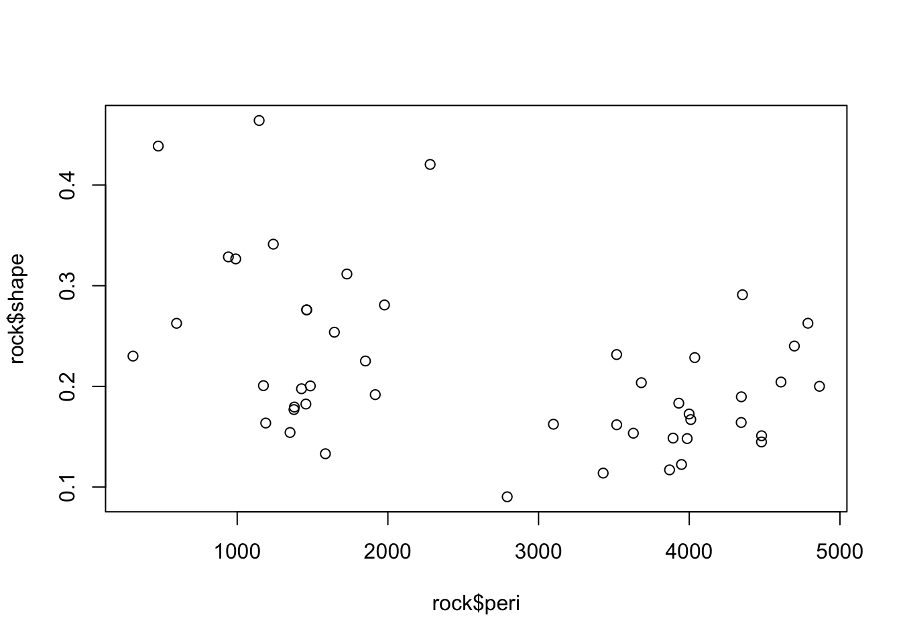
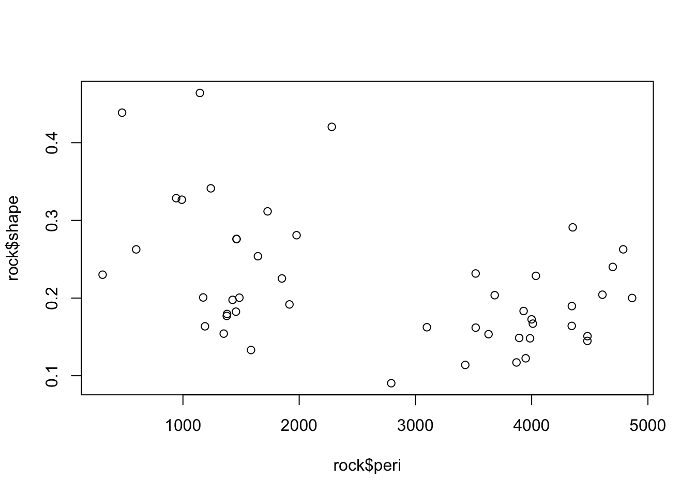
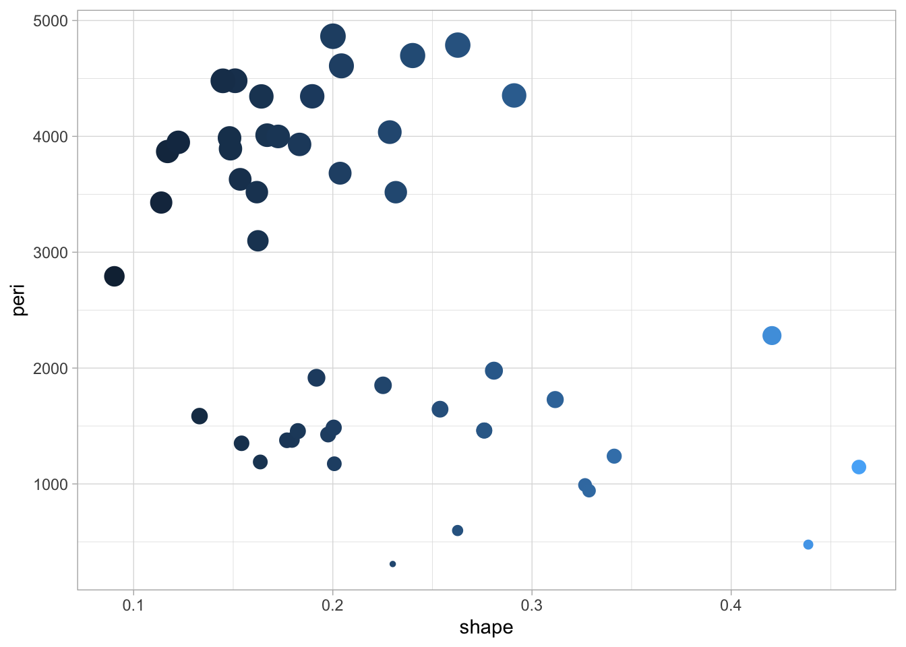
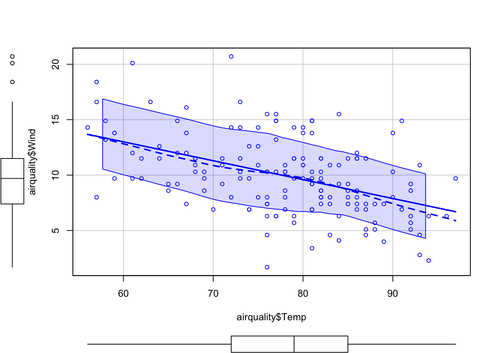

Codice
plot(rock$peri,rock$shape)
plot(rock$peri,rock$shape)
1+1 [1] 2knitr::include_graphics("pics/logo.png")
Il logo di UNIPD si vede in Figura 1

In Figura 2 c’è un grafico


In Figura 4
kableExtra::kable(mtcars[1:6, ])Una tabella di esempio
| mpg | cyl | disp | hp | drat | wt | qsec | vs | am | gear | carb | |
|---|---|---|---|---|---|---|---|---|---|---|---|
| Mazda RX4 | 21.0 | 6 | 160 | 110 | 3.90 | 2.620 | 16.46 | 0 | 1 | 4 | 4 |
| Mazda RX4 Wag | 21.0 | 6 | 160 | 110 | 3.90 | 2.875 | 17.02 | 0 | 1 | 4 | 4 |
| Datsun 710 | 22.8 | 4 | 108 | 93 | 3.85 | 2.320 | 18.61 | 1 | 1 | 4 | 1 |
| Hornet 4 Drive | 21.4 | 6 | 258 | 110 | 3.08 | 3.215 | 19.44 | 1 | 0 | 3 | 1 |
| Hornet Sportabout | 18.7 | 8 | 360 | 175 | 3.15 | 3.440 | 17.02 | 0 | 0 | 3 | 2 |
| Valiant | 18.1 | 6 | 225 | 105 | 2.76 | 3.460 | 20.22 | 1 | 0 | 3 | 1 |
testo nella prima colonna
head(airquality,10) Ozone Solar.R Wind Temp Month Day
1 41 190 7.4 67 5 1
2 36 118 8.0 72 5 2
3 12 149 12.6 74 5 3
4 18 313 11.5 62 5 4
5 NA NA 14.3 56 5 5
6 28 NA 14.9 66 5 6
7 23 299 8.6 65 5 7
8 19 99 13.8 59 5 8
9 8 19 20.1 61 5 9
10 NA 194 8.6 69 5 10Ecco il mio grafico
car::scatterplot(airquality$Temp, airquality$Wind)
head(airquality,10) Ozone Solar.R Wind Temp Month Day
1 41 190 7.4 67 5 1
2 36 118 8.0 72 5 2
3 12 149 12.6 74 5 3
4 18 313 11.5 62 5 4
5 NA NA 14.3 56 5 5
6 28 NA 14.9 66 5 6
7 23 299 8.6 65 5 7
8 19 99 13.8 59 5 8
9 8 19 20.1 61 5 9
10 NA 194 8.6 69 5 10:::
Descrizione del mio dataset
kableExtra::kable(airquality[1:10,])| Ozone | Solar.R | Wind | Temp | Month | Day |
|---|---|---|---|---|---|
| 41 | 190 | 7.4 | 67 | 5 | 1 |
| 36 | 118 | 8.0 | 72 | 5 | 2 |
| 12 | 149 | 12.6 | 74 | 5 | 3 |
| 18 | 313 | 11.5 | 62 | 5 | 4 |
| NA | NA | 14.3 | 56 | 5 | 5 |
| 28 | NA | 14.9 | 66 | 5 | 6 |
| 23 | 299 | 8.6 | 65 | 5 | 7 |
| 19 | 99 | 13.8 | 59 | 5 | 8 |
| 8 | 19 | 20.1 | 61 | 5 | 9 |
| NA | 194 | 8.6 | 69 | 5 | 10 |
In Tabella 1 le prime 10 osservazioni del dataset Airquality

In Figura 5 c’è un grafico
Quarto enables you to weave together content and executable code into a finished document. To learn more about Quarto see https://quarto.org.
When you click the Render button a document will be generated that includes both content and the output of embedded code. You can embed code like this:
1 + 1[1] 2library(kableExtra)You can add options to executable code like this
[1] 4The echo: false option disables the printing of code (only output is displayed).